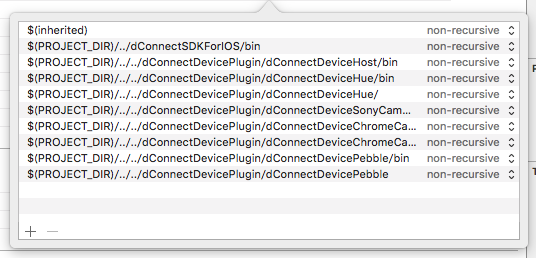
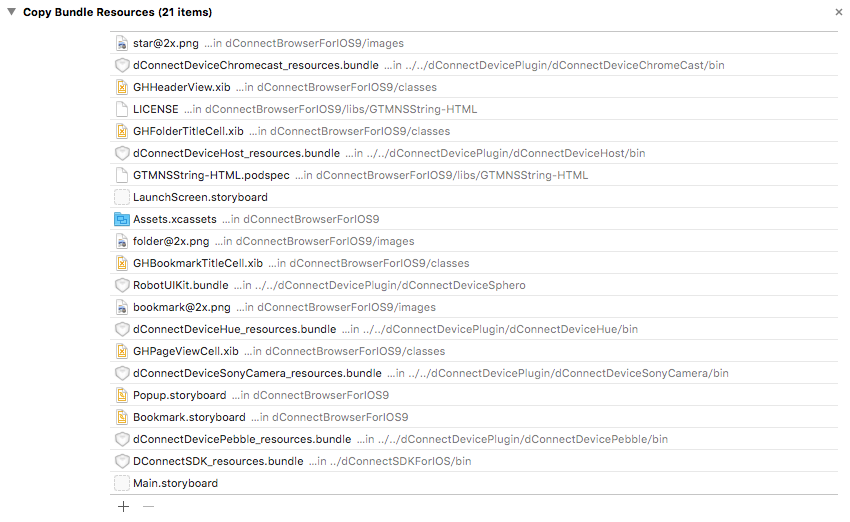

DeviceConnect Browserをビルドする
iOSではバックグラウンドでWeb APIサーバを実行することができないため、ブラウザ兼Web APIサーバという構成になっています。
ここではDeviceConnect Browserをビルドする方法を紹介します。これはDeviceConnect SDKのデモ実装として参考になります。また、プラグインを追加する際にも役立つでしょう。
ソースコードの取得
DeviceConnect/DeviceConnect-iOS: Device Connect Plug-In for iOSを取得します。
git clone https://github.com/DeviceConnect/DeviceConnect-iOS.git
cd DeviceConnect-iOS
終わったらDeviceConnect.xcworkspaceを開きます。
設定の変更
まずBundle Identifierを変更します。今回は jp.moongift.deviceconnect.browser としました。

DConnectSDKのビルド
まずプロジェクトをDConnectSDKに変更します。そして、DConnectSDKTestsは削除します。

続いてCode Signing Identityを変更します。

それが終わったらターゲットをDConnectSDK_frameworkに変更してビルドします。この時、対象は実機とします。
dConnectBrowserForIOS9の設定を変更
DConnectSDKのビルドが終わったら、dConnectBrowserForIOS9に移ります。
今回は簡単にビルドできるものだけにしておきます。
Linked Frameworks and Librariesの変更
Linked Frameworks and Librariesから不要なframeworkを省きます。残したのは次の通りです。

Capabilitiesの変更
App Groupsを追加します。具体的には、group.jp.moongift.deviceconnect.browserといった具合で先ほど決めたBundle Identifierのプリフィックスにgroup.をつけたものになります。

Build Settingsの変更
Search PathsのFramework Search Pathsからも不要なパスを省きます。残したのは次の通りです。

Build Phasesの変更
Copy Bundle Resourcesを変更します。残したのは次の通りです。

BookmarkShareの変更
ビルドターゲットをBookmarkShareに変更し、Bundle Identifierを jp.moongift.deviceconnect.browser.bookmarkShare のようにします。
BookmarkShare.entitiementsの修正
group.com.deviceconnect.dConnectBrowserForiOS9で検索して出てきたBookmarkShare.entitiementsの値を App Groups で指定した文字列に変更してください。

コードの修正
最後にXcodeの検索で、group.com.deviceconnect.dConnectBrowserForIOS9を検索します。出てきたコードにて、文字列を App Groups で指定した文字列に変更してください。

フレームワークのビルド
フレームワークをビルドする際にはターゲットを〜_frameworkとなっているものを選んでください。それ以外のものを選んでビルドしてもエラーが出ることがあります。
これでビルドできるようになります。ビルドの際には実行するアプリを聞かれますのでSafariを選択します。

ビルドが通れば実機で起動できるようになります。